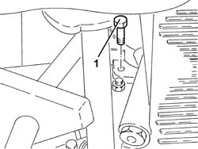
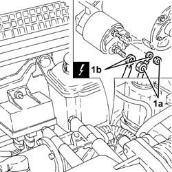
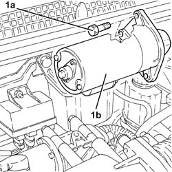
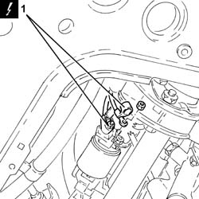
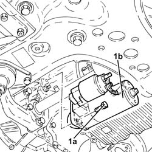

5520B10 starter motor - r+r
- Path
- Procedures > 55 ELECTRICAL EQUIPMENT > 5520 ENGINE STARTING > 5520B starter motor and components > 5520B10 starter motor - r+r
- Kind
- repair procedure (removal / refitting; the operation number is the code)
- Applies to
- engines: 1.9 JTD 8V, 1.9 JTD 16V; all production periods
- Interactive page
- https://sloeber94.github.io/elrnDB-a147/en/#/3025517
Applies to: engines: 1.9 JTD 8V; all production periods
 Removing
Removing
 Refitting
RefittingPosition the vehicle on the ramp.
Ensure that the ignition key is in the OFF position, then disconnect the negative battery terminal (-).
 | Name | Connector |
|---|---|---|
- | Battery |
Proceed with removal 1016A10 sound-proofing cover - r + r .
Proceed with removal 7055B54 under-engine guard - r r .
1. Undo the lower starter motor retaining bolt.

Applies to: engines: 1.9 JTD 8V; all production periods
1. Undo the nuts (1a) and disconnect the electrical connections (1b) from the stater motor.
| Name | Connector |
|---|---|---|
1b | Starter' motor |

Applies to: engines: 1.9 JTD 8V; all production periods
1. Undo the upper bolts (1a) and remove the starter motor (1b).

Applies to: engines: 1.9 JTD 8V; all production periods
Refitting
RemovingRefit the starter motor in its housing and fix it tightening the bolts to the recommended torque.
 | Fastening | Component | Ø | Value (daNm) |
|---|---|---|---|---|
- | Bolt | STARTER MOTOR | M8 | (Gearbox side) 2.7 |
Connect the electrical connections to the starter motor and fix them using the nuts.
Proceed with refitting 7055B54 under-engine guard - r r .
Proceed with refitting 1016A10 sound-proofing cover - r + r .
Connect the negative (-) battery terminal.
Remove the car from the ramps.
Applies to: engines: 1.9 JTD 16V; all production periods
Removing
RefittingPosition the vehicle on the ramp.
Ensure that the ignition key is in the OFF position, then disconnect the negative battery terminal (-).
| Name | Connector |
|---|---|---|
- | Battery |
Proceed with removal 7055B54 under-engine guard - r r .
Proceed with removal 1076B70 exhaust pipe between pre-catalytic converter and catalytic converter - r r .
1. Disconnect the electrical connections from the starter motor.
| Name | Connector |
|---|---|---|
1 | Starter' motor |

Applies to: engines: 1.9 JTD 16V; all production periods
1. Undo the bolts (1a) and remove the starter motor (1b).

Applies to: engines: 1.9 JTD 16V; all production periods
Refitting
RemovingRefit the starter motor in its housing and fix it tightening the bolts to the recommended torque.
| Fastening | Component | Ø | Value (daNm) |
|---|---|---|---|---|
- | Bolt | STARTER MOTOR | M8 | (Gearbox side) 2.4 ÷ 3.0 |
Connect the electrical connections to the starter motor.
Proceed with refitting 1076B70 exhaust pipe between pre-catalytic converter and catalytic converter - r r .
Proceed with refitting 7055B54 under-engine guard - r r .
Connect the negative (-) battery terminal.
Remove the car from the ramps.
Topics linked from this page (5)
- 1016A10 sound-proofing cover - r + r
- 1076B70 exhaust pipe between pre-catalytic converter and catalytic converter - r r
- 7055B54 under-engine guard - r r
- A1B Battery ( Connectors )
- A20 Starter' motor